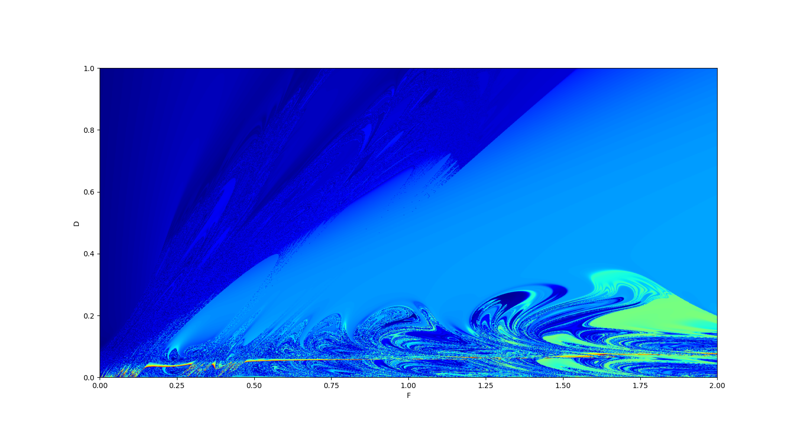

Driven Duffing Oscillator
Sensitivity to initial conditions in a periodically forced double-well oscillator.
This project studies the forced, damped Duffing oscillator
$$\ddot{x} \;=\; -\,\delta\,\dot{x} \;+\; x \;-\; x^{3} \;+\; F\cos t ,$$
a particle in the double-well potential $V(x) = -\tfrac{1}{2}x^2 + \tfrac{1}{4}x^4$ with linear damping $\delta$ and sinusoidal driving of amplitude $F$. For weak forcing the particle settles into one of the two wells; for strong enough forcing it hops chaotically between them, and which long-term behavior occurs depends delicately on where the trajectory starts.
The script runs in two modes. In param mode it sweeps the
$(F, \delta)$ parameter plane and records the late-time oscillation amplitude at
each point, producing a stability diagram, with the integration time step refined
adaptively whenever a simulation blows up. In icond mode (shown
below) it fixes $F = 1.25$, $\delta = 0.1$ and integrates an entire grid of
initial conditions $(x_0, \dot{x}_0) \in [-2.5, 2.5]^2$ simultaneously as vectorized
array operations. Coloring each pixel by its final position $x(T)$ reveals the
finely interleaved basin structure characteristic of chaotic dynamics: nearby
starting points end up on opposite sides of the potential barrier.

Parameter space
Sweeping the forcing amplitude $F$ and damping $D$ (the param
mode of the script) and recording the late-time oscillation amplitude at
each point produces a phase diagram of the oscillator's regimes. At strong
damping the response is small and regular; as $D$ decreases the response
grows and the diagram develops interleaved tongues where periodic and
chaotic behavior alternate on finer and finer scales, down to the nearly
undamped band at the bottom.

Explore the initial-condition space
The simulation below evolves the entire initial-condition plane live in your browser, using the same integration scheme as the script (dt = 0.001). Every pixel is one trajectory, started at $(x_0, \dot{x}_0) \in [-2.5, 2.5]^2$ with zero initial acceleration, and colored by its current position $x(t)$ from $-2.5$ (blue) to $+2.5$ (red). Choose a forcing amplitude $F$ and damping $D$ — guided by the phase diagram above — and press Run. Smooth regions are trajectories moving in lockstep; sharp interleaving is sensitive dependence on initial conditions. The sliders apply immediately, so you can also drag $F$ or $D$ mid-run and watch the plane reorganize.
Source code
- pendulum.py — both modes: the $(F, D)$ parameter sweep and the animated initial-condition grid